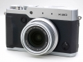
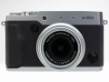
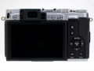
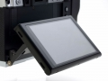

器材库 > 不可换镜头数码相机 > X30

规格总览
发布日期
2014-08-26
厂家推荐价格
700.00 （美元）
影像规格
影像传感器
X-Trans CMOS II
影像传感器尺寸
2/3英寸
总像素
1200万
有效像素
1200万
静态图像尺寸
4000 x 3000
静态图像格式
JPEG, RAW, RAW+JPEG
画幅比
3:2, 4:3, 1:1
短片尺寸
1080P
短片格式
MOV
防抖系统
镜片位移式光学防抖
镜头和对焦
镜头结构
11片/9组
非球面镜片
3片
低/超低色散镜片
2片
焦距
f ＝ 7.1 至 28.4mmmm
等效35mm画幅焦距
28 mm至112mmmm
最大光圈
F2~F2.8
光学变焦
4倍
数码变焦
2倍
最近对焦距离
50cm, 微距1cm
自动对焦系统
智能混合AF（TTL对比AF/TTL相位检测AF）
对焦模式
多重、区域、追踪
AF辅助灯
有
曝光控制
测光模式
中央重点测光, 多分区评价测光, 点测光, 平均测光
曝光模式
P（程序自动曝光）, S（快门速度优先自动曝光）, M（手动测光曝光）
ISO感光度
ISO100 – 12800
自拍
10秒, 2秒
连拍
12FPS（JPEG模式下为18）
闪光灯
内置闪光灯
弹出式
取景规格
取景器
电子取景器
取景器像素
236万
LCD类型
彩色TFT LCD
LCD尺寸
3.0英寸
LCD像素
92万
视野率
100%
LCD特性
翻转屏
文件输入/输出
内置存储容量
50M
存储卡
SD/SDHC, SDXC
数据接口
USB2.0
视频/音频接口
Micro HDMI 接口
无线功能
Wi-Fi
电源
电池
NP-95锂离子电池
续航能力
约470幅（LCD：开启、自动模式）
外观
颜色
黑色, 金属灰
尺寸
118.7x 71.6 x 60.3mm
重量
约423g（包括电池和存储卡）g
文光射斗2015-07-25 22:01
807110842015-06-12 00:045 分
操作性 5.00功能性 5.00美观性 5.00趣味性 5.00耐用性 5.00性价比 5.00解像力 5.00色彩还原 5.00
产品图 / 样片



评测 / 相关文章
- 详细内容 （存档）
- ［资讯］富士高端紧凑型数码相机X30官方样片欣赏 （存档）
相关文章
- ［资讯］富士高端紧凑型数码相机X30官方样片欣赏 （存档）
- ［资讯］富士X30 （存档）
- ［资讯］富士官方宣布停产众多产品 （原站已下线）